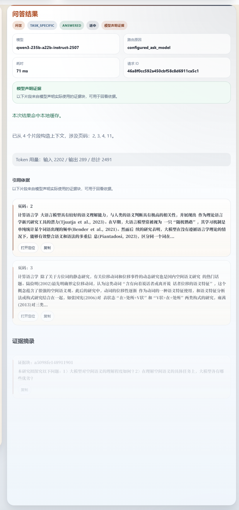
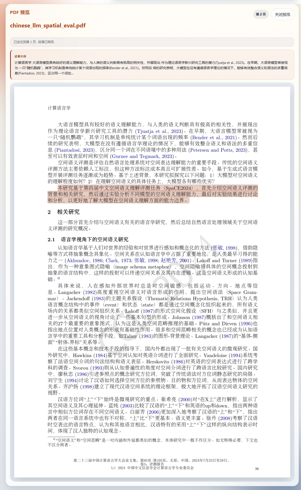
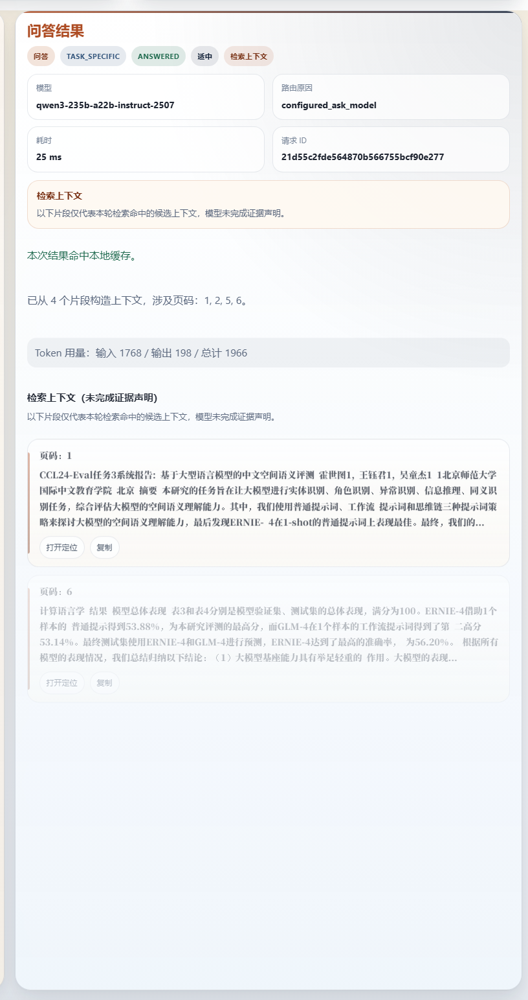
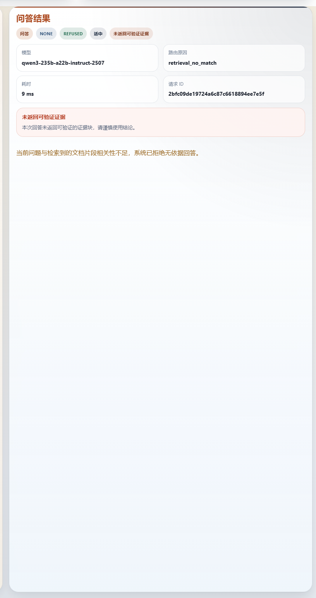

Evidence-Backed Document QA
研答通
带证据回链的论文 / 报告问答助手。核心能力不是“把答案说出来”，而是让每一条回答都能跳回 PDF 原文证据。
真实 replay
2 answered + 1 refused
默认 QA 模型
qwen3-235b-a22b-instruct-2507
为什么要做它
- 长文阅读慢，答辩和复核更需要“说得出处”。
- 普通聊天工具会给答案，但很难证明答案真的来自文档。
- 我们把“答案必须回到原文”做成了一条可验证链路。
锁定样例
中文论文 PDF
核心主线
ask → citation → PDF
补充验证
qwen3-32b 已验证可回退
评审重点
证据回链，不是泛化聊天
锁定样例：`chinese_llm_spatial_eval.pdf`
2026-04-18 Gold Sample Story
Verified Path
最短可验证链路
在当前真实运行环境下，已经验证通过的主路径是： login → upload → ask → citation → PDF render → refusal
1. Upload
上传论文或报告，保留原始文件与解析输出。
2. Parse
保存页级结构、文本分块与页面上下文。
3. Retrieve
先检索相关片段，未命中就直接拒答。
4. Answer
模型返回回答、used chunks 与 evidence quotes。
5. Cite
输出 citation、页码和原文片段。
6. Render
点击引用，直接回到 PDF 页面证据。
工程含义
不是概念图，已经在当前 `.env` 和真实模型上验证。
演示含义
评审先看到结果，再理解工程路径，不需要先听复杂架构。
权威报告
`gold_sample_replay_real_summary_latest.md`
固定题集
2 answerable + 1 refusal
当前定位
论文 / 报告阅读与答辩准备
Question 1
文档内问题先给答案，再给证据
锁定问题：这篇论文主要研究了什么问题？
- 系统先检索相关片段，再进入回答。
- 回答、citation、证据片段同步出现。
- 这一步已经证明它不是脱离文档的聊天壳。
评审要点
先展示“回答 + citation”同屏，再解释这是后端反查原文后的产物。

`20260418_gold_ask_research_focus.png`：回答正文、引用页码与证据片段同屏。
主叙事必须强调 evidence-backed ask
不要把 generic chat 当卖点
Citation Jump

`20260418_gold_pdf_render.png`：点击 citation 后，直接跳到对应 PDF 页面。
证据能回到 PDF 原文
- citation 不只是页码，而是能打开真实页面。
- 页面内显示证据高亮，旁边保留原文片段文本。
- 这一步把“回答可信”变成“证据可看”。
对用户
可以快速确认答案出处，适合答辩和汇报前复核。
对评审
看得见 PDF 证据，比口头描述更有说服力。
Question 2 + Model Choice
数值问题也能稳定回链
锁定问题：作者最终的方法排名和总体准确率分别是多少？
- 当前锁定结果：第六、56.20%。
- 两种 QA 模型都通过 `2 answerable + 1 refusal`。
- `235b` grounding 更丰满，`32b` 可作 fallback。
主模型
qwen3-235b-a22b-instruct-2507
回退模型
qwen3-32b
结论
当前继续保持 235b 为默认 QA

`20260418_gold_ask_rank_accuracy.png`：具体数值答案 + citations。
Reliability Boundary

`20260418_gold_refusal.png`：离题问题被明确拒答，`retrieval_status=no_match`。
离题不编造，才叫可靠
- 锁定拒答问题：木星有几颗卫星？
- 检索未命中时，系统不会硬答，而是直接拒答。
- 对文档助手而言，边界控制和可验证性同样重要。
收束结论
研答通当前最强的差异点，不是“模型很强”，而是“每个结论都能回到文档证据”。
可选附录：stats panel / API docs 仅作支撑，不进主叙事
Final Message: Answer, Cite, Return To Evidence